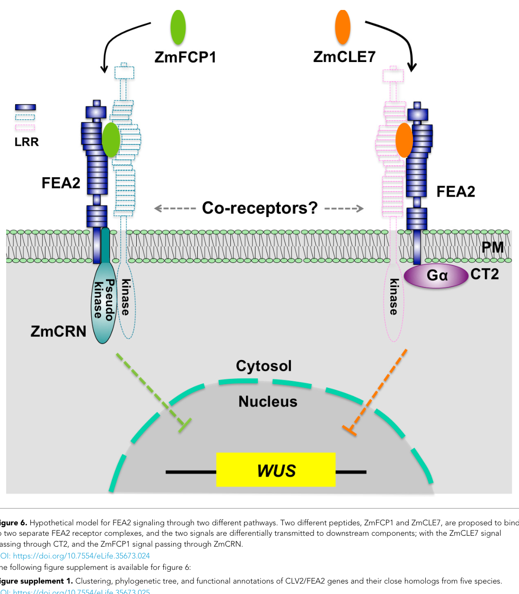

FEA2 (FASCIATED EAR2; UniProt Q940E8) is a maize leucine-rich repeat receptor-like protein (LRR-RLP) and the maize ortholog of Arabidopsis CLAVATA2 (CLV2). It is a single-pass type I plasma-membrane protein with a cleaved signal peptide, a large extracellular domain built from ~17-19 leucine-rich repeats (with an internal "island" between LRRs), a single transmembrane helix, and a very short cytoplasmic tail that lacks any obvious intracellular signaling/kinase domain. FEA2 functions in the CLAVATA-WUSCHEL (CLV-WUS) pathway to restrict stem-cell proliferation in shoot and inflorescence meristems: loss-of-function fea2 mutants overproliferate the ear inflorescence meristem (massive fasciation, flattened wider ears with irregular extra rows of seeds) and have a more modest enlargement of floral meristems with increased floral organ number (Taguchi-Shiobara et al. 2001, PMID:11641280). Mechanistically, FEA2 acts as a signal-routing receptor hub at the plasma membrane that perceives distinct CLE peptide ligands and transmits them through two separate downstream effectors: the ZmCLE7 (maize CLV3 ortholog) signal is routed via the heterotrimeric G-protein alpha subunit COMPACT PLANT2 (CT2), whereas the ZmFCP1 signal is routed via the membrane pseudokinase ZmCRN (CORYNE). fea2 mutants are resistant to both CLE peptides, placing FEA2 upstream of both branches; this perception ultimately represses the WUSCHEL ortholog ZmWUS1, restricting meristem size (Je et al. 2018, eLife, doi:10.7554/eLife.35673; Dong et al. 2023; Demesa-Arevalo et al. 2024). FEA2 is expressed in ear primordia, the vegetative apex and young leaves, but not in roots. Because meristem size determines organ number, FEA2 is a quantitative regulator of maize kernel row number (KRN) and a breeding-relevant target for ear architecture (Bommert et al. 2013, PMID:23377180). FEA2 is NOT an enzyme; its molecular role is extracellular CLE-peptide perception/signal transduction, and its core biological role is meristem-size/stem-cell-homeostasis control - not generic cell differentiation.
| GO Term | Evidence | Action | Reason |
|---|---|---|---|
|
GO:0030154
cell differentiation
|
IEA
GO_REF:0000043 |
MODIFY |
Summary: SPKW (GO_REF:0000043) annotation derived from the UniProt keyword "Differentiation" (FEA2 is keyworded "Developmental protein; Differentiation"); snapshot-only, removed in the current GOA release. "Cell differentiation" is a generic catch-all parent term. FEA2's actual role is restriction of stem-cell proliferation and control of meristem size/identity via CLAVATA-CLE signaling, not the broad process of cell differentiation.
Reason: GOA's removal of the keyword-derived term was reasonable because "cell differentiation" (GO:0030154) is far too generic and is not the function FEA2 performs. FEA2 is a CLAVATA2-like receptor-like protein that restricts shoot/inflorescence meristem proliferation: fea2 mutants cause a massive overproliferation of the ear inflorescence meristem and increased floral organ number, and FEA2 "normally functions in these meristems to restrict growth" [PMID:11641280]. The genuine biology - maintaining the identity, size and shape of the meristem stem-cell niche by transducing CLE peptide signals (ZmCLE7 via CT2; ZmFCP1 via ZmCRN) to repress ZmWUS1 - is best captured by the meristem-maintenance/meristem-growth ontology branch, not by "cell differentiation". The annotation should therefore be MODIFIED to the more precise term "meristem maintenance" (GO:0010073, "Any process involved in maintaining the identity, size and shape of a meristem"), which complements the already-present "regulation of meristem development" (GO:0048509). The more specific "regulation of meristem growth" (GO:0010075) is also proposed as a NEW term below. Tier A (high-confidence over-broad keyword term replaced by a precise, well-supported meristem term).
Proposed replacements:
meristem maintenance
Supporting Evidence:
PMID:11641280
fea2 normally functions in
these meristems to restrict growth
PMID:11641280
we isolated a novel
mutant of maize, fasciated ear2 (fea2), which causes a massive overproliferation
of the ear inflorescence meristem and a more modest effect on floral meristem
size and organ number
file:MAIZE/FEA2/FEA2-deep-research-falcon.md
FEA2 is a **signaling co-receptor/receptor component** that perceives CLE peptide signals to **restrict stem-cell proliferation and meristem size**
|
|
GO:0009908
flower development
|
IBA
GO_REF:0000033 |
KEEP AS NON CORE |
Summary: IBA annotation propagated across the CLV2/FEA2 phylogenetic group. FEA2 affects flower (floral organ) development indirectly, as a consequence of its meristem-size role.
Reason: The annotation is correct but represents a secondary/pleiotropic consequence rather than the core function. fea2 mutants have enlarged floral meristems and a consequent increase in floral organ number (extra stamens in male flowers, extra carpels in female flowers), but the paper explicitly interprets this organ-number increase as "presumably a consequence of the enlarged floral meristems" rather than a direct floral-patterning role [PMID:11641280]. The core, mechanistic function is meristem-size restriction via CLAVATA signaling; flower development is downstream of that. Retain as non-core.
Supporting Evidence:
PMID:11641280
fea2 plants have an increase in floral organ number that is
presumably a consequence of the enlarged floral meristems
file:MAIZE/FEA2/FEA2-deep-research-falcon.md
its primary role is extracellular signal perception/transduction in meristem maintenance
|
|
GO:0048509
regulation of meristem development
|
IBA
GO_REF:0000033 |
ACCEPT |
Summary: IBA annotation propagated across the CLV2/FEA2 phylogenetic group. This is the core biological process of FEA2: regulation (restriction) of shoot/inflorescence meristem development through CLAVATA-CLE signaling.
Reason: This is the central, well-supported function of FEA2 and is at an appropriate level of specificity. FEA2 "regulates shoot meristem proliferation in maize" (UniProt FUNCTION; the title of the cloning paper) and "normally functions in these meristems to restrict growth" [PMID:11641280]. Mechanistically it perceives CLE peptides at the plasma membrane and routes them through CT2 and ZmCRN to repress ZmWUS1, restricting meristem size [file:MAIZE/FEA2/FEA2-deep-research-falcon.md]. The IBA term matches the experimentally demonstrated role; a more specific NEW term (GO:0010075 regulation of meristem growth) is proposed below.
Supporting Evidence:
PMID:11641280
fea2 normally functions in
these meristems to restrict growth
file:MAIZE/FEA2/FEA2-deep-research-falcon.md
FEA2 functions in the **CLAVATA–WUSCHEL negative feedback loop**
|
|
GO:0005886
plasma membrane
|
IEA
GO_REF:0000044 |
ACCEPT |
Summary: IEA annotation from the UniProt Subcellular-Location keyword mapping (SL-0039, Cell membrane). Correct and confirmed experimentally by FEA2-GFP localization.
Reason: Strongly supported. UniProt records the subcellular location as "Cell membrane; Single-pass type I membrane protein", and FEA2 has the predicted topology of an extracellular LRR ectodomain (residues 29-573), a single transmembrane helix (574-597) and a short cytoplasmic tail (598-613). Direct experimental evidence: FEA2 is "predicted to be membrane localized, and visualization of FEA2-GFP is consistent with its targeting to the plasma membrane" [PMID:11641280]. The plasma-membrane location is essential for its role as a receptor for an extracellular CLE-peptide ligand. This IEA duplicates the IDA annotation to the same term and is acceptable.
Supporting Evidence:
PMID:11641280
FEA2 is predicted to be membrane localized, and visualization of
FEA2–GFP is consistent with its targeting to the plasma membrane
file:MAIZE/FEA2/FEA2-deep-research-falcon.md
Maize **FEA2 (UniProt Q940E8)** is a **CLV2-like LRR receptor-like protein** functioning at the **plasma membrane** to perceive CLE peptides and restrict meristem proliferation
|
|
GO:0005886
plasma membrane
|
IDA
PMID:11641280 The fasciated ear2 gene encodes a leucine-rich repeat recept... |
ACCEPT |
Summary: IDA annotation from the cloning paper: FEA2-GFP localizes to the plasma membrane. This is the primary experimental evidence for the cellular-component assignment.
Reason: Directly supported by experiment. Taguchi-Shiobara et al. visualized a FEA2-GFP fusion and observed accumulation at the plasma membrane, consistent with the predicted single-pass type I topology; they note this "supports the hypothesis that FEA2 acts as a receptor for an extracellular ligand" [PMID:11641280]. (A reproducible secondary fluorescence at the nuclear membrane was noted but its significance was left open and it is not the functional location.) Plasma-membrane localization is core to FEA2's receptor function. Duplicate of the IEA annotation to the same term, which is fine.
Supporting Evidence:
PMID:11641280
The apparent plasma membrane
accumulation of FEA2–GFP supports the hypothesis that FEA2 acts as a
receptor for an extracellular ligand
PMID:11641280
it
encodes a membrane localized leucine-rich repeat receptor-like protein that is
most closely related to CLAVATA2 from Arabidopsis
|
|
GO:0009908
flower development
|
IMP
PMID:11641280 The fasciated ear2 gene encodes a leucine-rich repeat recept... |
KEEP AS NON CORE |
Summary: IMP annotation from the cloning paper, based on the fea2 mutant phenotype of altered floral organ number. This is a secondary consequence of the meristem-size defect.
Reason: The mutant phenotype is real but pleiotropic/downstream. fea2 loss of function produces enlarged floral meristems with a consequent increase in floral organ number (extra stamens and carpels), which the authors explicitly interpret as "presumably a consequence of the enlarged floral meristems" rather than a direct floral developmental function [PMID:11641280]. The disruption phenotype recorded in UniProt likewise lists "increased floral organ numbers" alongside the fasciation/ear phenotypes. Because the essence of FEA2's function is meristem-size restriction, flower development should be kept as a non-core (developmental, pleiotropic) annotation.
Supporting Evidence:
PMID:11641280
fea2 plants have an increase in floral organ number that is
presumably a consequence of the enlarged floral meristems
PMID:11641280
Male flowers
have an increase in stamen number, and female flowers have an increase
in carpel number
|
|
GO:0048509
regulation of meristem development
|
IMP
PMID:11641280 The fasciated ear2 gene encodes a leucine-rich repeat recept... |
ACCEPT |
Summary: IMP annotation from the cloning paper: the fea2 loss-of-function mutant overproliferates the inflorescence/floral meristem, demonstrating that FEA2 regulates (restricts) meristem development. This is the core function, supported by direct mutant analysis.
Reason: This is the core, experimentally demonstrated function. The fea2 mutant "causes a massive overproliferation of the ear inflorescence meristem and a more modest effect on floral meristem size and organ number", and FEA2 "normally functions in these meristems to restrict growth" [PMID:11641280]. The paper concludes that "the CLAVATA pathway for regulation of meristem size is functionally conserved throughout the angiosperms" [PMID:11641280]. The IMP term is correct and at an appropriate altitude; a more specific NEW term (GO:0010075, regulation of meristem growth) is proposed below to capture the meristem-size specificity.
Supporting Evidence:
PMID:11641280
which causes a massive overproliferation
of the ear inflorescence meristem
PMID:11641280
CLAVATA pathway for regulation of meristem size is
functionally conserved throughout the angiosperms
|
|
GO:0001653
peptide receptor activity
|
IMP
PMID:11641280 The fasciated ear2 gene encodes a leucine-rich repeat recept... |
NEW |
Summary: Proposed NEW molecular-function annotation. FEA2 is the CLV2-like LRR receptor-like protein that perceives secreted CLE peptide ligands (ZmCLE7, ZmFCP1) at the plasma membrane. Current GOA has NO molecular-function term for FEA2 at all.
Reason: The current GOA release annotates FEA2 only with biological-process and cellular-component terms and contains no molecular function, even though FEA2's defining role is ligand perception. FEA2 is a membrane LRR receptor-like protein "most closely related to CLAVATA2" whose plasma-membrane localization "supports the hypothesis that FEA2 acts as a receptor for an extracellular ligand" [PMID:11641280]. Mechanistic work established that FEA2 is "a signaling co-receptor/receptor component that perceives CLE peptide signals" - routing ZmCLE7 and ZmFCP1 into distinct downstream effectors, with fea2 mutants resistant to both peptides [file:MAIZE/FEA2/FEA2-deep-research-falcon.md]. "Peptide receptor activity" (GO:0001653, "Combining with an extracellular or intracellular peptide to initiate a change in cell activity") is the accurate MF for a CLE-peptide-perceiving receptor-like protein. (FEA2 lacks a cytoplasmic kinase domain, so a kinase MF is not appropriate; it acts as a receptor/co-receptor module.) IMP/ genetic evidence is justified by the peptide-resistance phenotype of fea2 mutants.
Supporting Evidence:
PMID:11641280
The apparent plasma membrane
accumulation of FEA2–GFP supports the hypothesis that FEA2 acts as a
receptor for an extracellular ligand
file:MAIZE/FEA2/FEA2-deep-research-falcon.md
FEA2 is a **signaling co-receptor/receptor component** that perceives CLE peptide signals
file:MAIZE/FEA2/FEA2-deep-research-falcon.md
**fea2 mutants are resistant to both CLE ligands/combined peptide treatments**, placing FEA2 upstream of both branches as a common receptor component
|
|
GO:0010075
regulation of meristem growth
|
IMP
PMID:11641280 The fasciated ear2 gene encodes a leucine-rich repeat recept... |
NEW |
Summary: Proposed NEW biological-process annotation capturing the meristem-size specificity of FEA2's function, more precise than the existing GO:0048509 (regulation of meristem development) and a better home for the biology that the retired "cell differentiation" keyword was gesturing at.
Reason: FEA2 specifically controls meristem SIZE/growth: fea2 mutants cause "a massive overproliferation of the ear inflorescence meristem" and FEA2 "normally functions in these meristems to restrict growth", with the CLAVATA pathway "for regulation of meristem size" conserved across angiosperms [PMID:11641280]. "Regulation of meristem growth" (GO:0010075, "Any process involved in maintaining the size and shape of a meristem") is more specific than the currently annotated GO:0048509 and directly matches the demonstrated phenotype. Proposed alongside the MODIFY of the retired SPKW term to GO:0010073 (meristem maintenance). IMP justified by the loss-of-function overproliferation phenotype.
Supporting Evidence:
PMID:11641280
fea2 normally functions in
these meristems to restrict growth
PMID:11641280
CLAVATA pathway for regulation of meristem size is
functionally conserved throughout the angiosperms
|
Q: Does FEA2 directly bind the CLE peptides ZmCLE7 and ZmFCP1, or does it require a co-receptor LRR receptor kinase (analogous to CLV1/BAM) for high-affinity ligand binding, given that FEA2 lacks an intracellular signaling domain?
Suggested experts: David Jackson
Q: How is ligand-specific routing achieved - what determines whether a given CLE peptide signal is transmitted through CT2 (G-protein) versus ZmCRN (pseudokinase)?
Suggested experts: David Jackson, Byoung Il Je
Experiment: In vitro / in planta peptide-binding assays (e.g. photoaffinity labelling or microscale thermophoresis) with purified FEA2 ectodomain and synthetic ZmCLE7 and ZmFCP1 peptides, with and without candidate co-receptor LRR-kinase ectodomains, to determine whether FEA2 binds CLE peptides directly.
Hypothesis: FEA2 perceives CLE peptides as part of a heterodimeric receptor complex and may require a co-receptor LRR receptor kinase for high-affinity binding.
Type: ligand-binding biochemistry
Experiment: Quantitative measurement of ZmWUS1 expression (in situ hybridization / qRT-PCR on microdissected meristems) in wild-type versus fea2, ct2 and Zmcrn single and double mutants, with and without ZmCLE7/ZmFCP1 peptide application.
Hypothesis: FEA2-mediated CLE perception represses ZmWUS1; loss of FEA2 derepresses ZmWUS1, expanding the stem-cell domain and enlarging the meristem.
Type: gene-expression / epistasis analysis
Experiment: Generate and field-test an allelic series of weak FEA2 alleles (cf. the Gly-332/Met-367/Gly-405/Pro-477 mutations) across environments to quantify the dose-response relationship between FEA2 activity, inflorescence meristem size and kernel row number.
Hypothesis: Graded reduction of FEA2 activity tunes meristem size and KRN continuously, making FEA2 a quantitative lever for ear architecture without full fasciation.
Type: quantitative genetics / phenotyping
The research report should be a detailed narrative explaining the function, biological processes, and localization of the gene product. Citations should be given for all claims.
You should prioritize authoritative reviews and primary scientific literature when conducting research. You can supplement
this with annotations you find in gene/protein databases, but these can be outdated or inaccurate.
We are specifically interested in the primary function of the gene - for enzymes, what reaction is catalyzed, and what is the substrate specificity? For transporters, what is the substrate? For structural proteins or adapters, what is the broader structural role? For signaling molecules, what is the role in the pathway.
We are interested in where in or outside the cell the gene product carries out its function.
We are also interested in the signaling or biochemical pathways in which the gene functions. We are less interested in broad pleiotropic effects, except where these elucidate the precise role.
Include evidence where possible. We are interested in both experimental evidence as well as inference from structure, evolution, or bioinformatic analysis. Precise studies should be prioritized over high-throughput, where available.
FASCIATED EAR2 (FEA2) is a Zea mays CLAVATA2 (CLV2)-orthologous leucine-rich repeat receptor-like protein (LRR-RLP) that functions at the plasma membrane to restrict stem-cell proliferation in shoot and inflorescence meristems, thereby shaping ear/tassel architecture and yield-associated traits. Mechanistic evidence indicates that FEA2 acts as a shared signaling node for at least two CLE peptide inputs (ZmCLE7 and ZmFCP1), routing these signals into two separable downstream branches mediated by the heterotrimeric Gα CT2 (COMPACT PLANT2) and the membrane pseudokinase ZmCRN (CORYNE), respectively, with convergence on meristem homeostasis outputs including ZmWUS regulation. (je2018theclavatareceptor pages 1-2, je2018theclavatareceptor pages 12-14, je2018theclavatareceptor media 3b7154fc)
The literature evidence used here explicitly studies maize FASCIATED EAR2 (FEA2) as the maize ortholog of Arabidopsis CLAVATA2, described as an LRR receptor-like protein involved in CLE-mediated meristem signaling (consistent with UniProt Q940E8’s “CLAVATA2-like” description). (je2018theclavatareceptor pages 1-2)
Shoot and inflorescence meristems maintain a stem-cell reservoir while producing organ primordia; this balance is classically governed by a CLAVATA–WUSCHEL (CLV–WUS) negative feedback circuit where extracellular peptide signals restrict WUS-driven stem-cell maintenance. Reviews emphasize that meristem intercellular communication integrates mobile factors, hormones, small RNAs, and secreted peptides perceived by membrane-localized receptors, with CLV–WUS as a central organizing module. (demesaarevalo2024intercellularcommunicationin pages 1-3)
In maize, CLV-like receptors and CLE ligands (including ZmCLE7, a CLV3 homolog) are components of this conserved module; hormonal crosstalk (notably cytokinin) can modulate CLV-mediated feedback onto WUS output. (chaudhry2024hormonalinfluenceon pages 5-6)
FEA2 is repeatedly described as a CLV2-like receptor-like protein (LRR-RLP) rather than a receptor kinase, implying a primary role as a co-receptor/scaffold in receptor complexes rather than as an enzyme that catalyzes reactions. (je2018theclavatareceptor pages 1-2)
A key mechanistic concept in this system is that CLV2/FEA2 does not itself bind CLE peptides directly, and instead is proposed to act with other ligand-binding receptors (e.g., LRR receptor-like kinases) to transmit ligand-dependent signals. (je2018theclavatareceptor pages 1-2, je2018theclavatareceptor pages 12-14)
Je et al. (2018) provide direct evidence that FEA2 is required for signaling from at least two distinct CLE peptides:
- ZmCLE7 (maize CLV3 ortholog)
- ZmFCP1 (ZmFON2-LIKE CLE PROTEIN1)
In peptide-response assays, fea2 mutants show resistance to both peptide inputs, supporting the conclusion that FEA2 is required for both pathways. (je2018theclavatareceptor pages 9-12, je2018theclavatareceptor pages 3-6)
FEA2 forms complexes with two distinct downstream signaling partners:
- CT2 (COMPACT PLANT2), the α subunit of the maize heterotrimeric G protein
- ZmCRN, a CORYNE ortholog described as a membrane-localized pseudokinase
Biochemical evidence (co-immunoprecipitation) shows that CT2 can pull down FEA2, and ZmCRN can pull down FEA2; reciprocally, FEA2 can immunoprecipitate either CT2 or ZmCRN. (je2018theclavatareceptor pages 6-9, je2018theclavatareceptor pages 9-12)
BiFC detected a direct FEA2–ZmCRN interaction, while FEA2–CT2 interaction was not detected by BiFC in that assay context, consistent with the possibility that FEA2–CT2 association is indirect or occurs in a different complex organization. (je2018theclavatareceptor pages 6-9)
Evidence further indicates ZmCRN and CT2 are not recovered as a single three-way complex (i.e., ZmCRN did not immunoprecipitate CT2), supporting a model of distinct FEA2-containing complexes. (je2017theclavatareceptor pages 9-12, je2018theclavatareceptor pages 6-9)
A central mechanistic advance is that FEA2 transmits different CLE peptide inputs through different downstream effectors:
- ZmCLE7 → CT2 branch
- ZmFCP1 → ZmCRN branch
This is supported by differential peptide resistance in mutants: ct2 shows resistance primarily to ZmCLE7, while Zmcrn shows resistance primarily to ZmFCP1; fea2 is resistant to both, consistent with FEA2 being upstream of both branches. (je2018theclavatareceptor pages 12-14, je2018theclavatareceptor pages 9-12)
Genetic interactions further support parallel branches: Zmcrn;ct2 double mutants show additive/enhanced phenotypes, consistent with separable outputs, while fea2 is epistatic in the pathway placement. (je2018theclavatareceptor pages 12-14, je2018theclavatareceptor pages 6-9)
A schematic model from Je et al. summarizes these relationships (distinct FEA2 complexes feeding into CT2 vs ZmCRN and converging on nuclear outputs controlling meristem homeostasis). (je2018theclavatareceptor media 3b7154fc)
Je et al. experimentally confirmed plasma membrane localization of ZmCRN-mCherry and noted that this localization is consistent with FEA2 and CT2 localization, supporting a plasma-membrane signaling complex. (je2018theclavatareceptor pages 6-9)
Additionally, the authors infer that FEA2 is on the plasma membrane even in the absence of ZmCRN, because FEA2 still functions with CT2 in a crn mutant background. (je2018theclavatareceptor pages 12-14)
Together these data place the primary site of FEA2 action at the cell surface/plasma membrane, consistent with receptor complex-mediated perception/transduction of extracellular CLE signals. (je2018theclavatareceptor pages 6-9, je2018theclavatareceptor pages 12-14)
Within the retrieved primary-text passages, FEA2 is identified as an LRR receptor-like protein (CLV2-like), but a full enumeration of its LRR count, transmembrane segment boundaries, or cytosolic tail length is not explicitly provided in the quoted sections. (je2018theclavatareceptor pages 1-2, je2018theclavatareceptor pages 12-14)
By contrast, the related maize receptor-like protein FEA3 is explicitly described as having a signal peptide, multiple LRRs, a transmembrane domain, and a short cytosolic tail lacking a kinase domain—illustrating the typical architecture used by CLV-related RLPs in maize and supporting the general co-receptor model for FEA2. (je2016signalingfrommaize pages 1-5)
FEA2 restricts stem-cell proliferation in meristems; loss-of-function phenotypes in the pathway include enlarged shoot apical meristems and fasciated ears / enlarged ear inflorescence meristems, consistent with excess stem-cell accumulation. (je2018theclavatareceptor pages 6-9, je2018theclavatareceptor pages 9-12, wu2018roleofheterotrimeric pages 1-2)
Je et al. report quantitative increases in vegetative SAM size in downstream pathway mutants and enhanced phenotypes in double mutants, illustrating the magnitude of CLV-branch perturbations:
- Zmcrn vegetative SAM: 130.0 ± 4.1 µm vs 109.2 ± 4.6 µm in normal siblings (P < 0.0001)
- Other comparisons reported include larger SAMs in Zmcrn and fea2 single mutants (166.3 ± 8.3 µm and 176.1 ± 9.8 µm) vs normal (139.7 ± 4.8 µm), and Zmcrn;ct2 double mutant SAM size 191.8 ± 18.6 µm (P < 0.0001)
These measurements support the conclusion that the FEA2 network quantitatively constrains meristem size and that CT2 and ZmCRN act as separable downstream effectors. (je2018theclavatareceptor pages 3-6, je2018theclavatareceptor pages 2-3)
A 2024 Annual Review of Plant Biology review frames meristem regulation as an intercellular communication problem mediated by secreted peptides and membrane receptors; it highlights maize CLV pathway literature (including FEA2/CT2 and yield-relevant CLV studies) as part of the broader conceptual landscape of shoot meristem signaling and its crop-relevant implications. (demesaarevalo2024intercellularcommunicationin pages 1-3)
A 2024 review on hormonal influence in maize inflorescence development explicitly lists FEA2 as a maize CLV2 homolog within the CLV module and emphasizes that cytokinin can modulate CLV-mediated repression of WUS output, connecting the FEA2-containing module to hormonal regulation of meristem size and inflorescence patterning. (chaudhry2024hormonalinfluenceon pages 5-6)
Authoritative reviews and primary studies position CLV-WUS components as yield-trait levers (e.g., kernel row number), and explicitly discuss exploitation of weak alleles to tune meristem size without severe fasciation. (fletcher2018theclvwusstem pages 1-3, je2016signalingfrommaize pages 9-12)
A maize inflorescence-architecture review specifically reports “promising results using fea2 weak alleles in field trials”, citing Trung et al. 2020, and argues that these strategies may have potential to increase yield (qualitatively; quantitative outcomes not provided in the excerpt). (chen2021improvingarchitecturaltraits pages 5-6)
A key applied insight is that weak fea2 alleles can enhance kernel row number, but may not necessarily increase overall yield due to compensatory decreases in kernel size, highlighting the importance of optimizing allele strength and genetic background. (fletcher2018theclvwusstem pages 5-7, je2016signalingfrommaize pages 9-12)
Although not direct editing of FEA2 itself in the retrieved excerpts, an adjacent translational avenue is engineering the downstream CT2 (Gα) branch: constitutively active CT2 and CRISPR-based perturbations of non-canonical Gα-like proteins (XLGs) are reported to improve agronomic traits including kernel row number, spikelet density, and leaf angle, and the work explicitly discusses generating weak alleles (including via CRISPR) as a route to multi-trait improvement. (wu2018roleofheterotrimeric pages 1-2, wu2018roleofheterotrimeric pages 11-12)
Mechanistically, Je et al. (2018) provide an expert framework for how “promiscuous” receptor-like proteins can achieve ligand specificity: distinct ligands can be interpreted through distinct receptor complexes and downstream branches, using shared components such as FEA2 but different intracellular effectors (CT2 vs ZmCRN). (je2018theclavatareceptor pages 12-14, je2018theclavatareceptor media 3b7154fc)
From an applications perspective, reviews emphasize that meristem regulatory circuits (including CLV-WUS and maize CLV orthologs) are attractive targets because small, tunable shifts in meristem activity can translate into changes in organ number and yield components—but also stress the need to manage pleiotropy and trade-offs (e.g., kernel size). (fletcher2018theclvwusstem pages 1-3, fletcher2018theclvwusstem pages 5-7)
The following table consolidates key functional annotation points with evidence types and URLs/DOIs.
| Functional aspect | Key findings | Evidence type | Key sources with dates/URLs/DOIs |
|---|---|---|---|
| Identity / class | FEA2 in maize is the ortholog of Arabidopsis CLAVATA2 (CLV2) and is described as a leucine-rich repeat receptor-like protein (LRR-RLP) involved in CLAVATA/CLE meristem signaling. This matches the UniProt Q940E8 annotation for a CLAVATA2-like precursor protein in Zea mays. (je2018theclavatareceptor pages 1-2) | Primary genetics/mechanistic paper; review | Je et al., 2018, eLife, published Mar 2018, https://doi.org/10.7554/eLife.35673; Demesa-Arevalo et al., 2024, Annual Review of Plant Biology, first published Feb 29 2024, https://doi.org/10.1146/annurev-arplant-070523-035342 |
| Core molecular function | FEA2 functions as a shared/co-receptor-like signaling component in the maize CLV-WUS pathway, restricting stem-cell proliferation in shoot and inflorescence meristems. The evidence supports a signaling role rather than an enzymatic one; FEA2 helps transmit extracellular CLE-peptide information to intracellular downstream effectors that ultimately influence ZmWUS output. (je2018theclavatareceptor pages 1-2, je2018theclavatareceptor pages 12-14, je2018theclavatareceptor media 3b7154fc) | Genetic, biochemical, model synthesis, review | Je et al., 2018, eLife, Mar 2018, https://doi.org/10.7554/eLife.35673; Fletcher, 2018, Plants, Oct 19 2018, https://doi.org/10.3390/plants7040087 |
| Ligands / peptide inputs | The strongest direct evidence shows FEA2 mediates responses to at least two CLE-family peptides: ZmCLE7 (maize CLV3 ortholog) and ZmFCP1 (ZmFON2-LIKE CLE PROTEIN1). fea2 mutants are resistant to both peptide treatments, supporting the conclusion that FEA2 is required for signaling from both inputs. (je2018theclavatareceptor pages 1-2, je2018theclavatareceptor pages 9-12, je2018theclavatareceptor pages 3-6) | Peptide-response assays, genetics | Je et al., 2018, eLife, Mar 2018, https://doi.org/10.7554/eLife.35673 |
| Direct ligand binding vs co-receptor role | The study emphasizes that CLV2/FEA2 does not itself directly bind CLV3/CLE peptides, consistent with a co-receptor role. The proposed model is that FEA2 works with ligand-binding RLKs in different receptor complexes to relay distinct peptide signals. (je2018theclavatareceptor pages 1-2, je2018theclavatareceptor pages 12-14) | Mechanistic interpretation from primary paper | Je et al., 2018, eLife, Mar 2018, https://doi.org/10.7554/eLife.35673 |
| Receptor complexes / interaction partners | FEA2 associates with ZmCRN and CT2 in separate complexes. Co-immunoprecipitation showed ZmCRN pulls down FEA2, CT2 pulls down FEA2, and FEA2 can immunoprecipitate either partner; ZmCRN and CT2 do not appear to form one common three-way complex, implying distinct receptor assemblies. (je2018theclavatareceptor pages 6-9, je2017theclavatareceptor pages 9-12, je2018theclavatareceptor pages 9-12) | Biochemical interaction assays (Co-IP), BiFC, genetics | Je et al., 2018, eLife, Mar 2018, https://doi.org/10.7554/eLife.35673 |
| Downstream effectors / branch specificity | FEA2 routes different CLE signals through different downstream components: CT2 (heterotrimeric Gα, COMPACT PLANT2) primarily for ZmCLE7, and ZmCRN (CORYNE ortholog, pseudokinase) primarily for ZmFCP1. Additive phenotypes in Zmcrn;ct2 double mutants and differential peptide resistance support two parallel downstream branches under a common FEA2 node. (je2018theclavatareceptor pages 12-14, je2017theclavatareceptor pages 9-12, je2018theclavatareceptor pages 9-12, je2018theclavatareceptor media 3b7154fc) | Genetics, peptide assays, biochemical interaction, model | Je et al., 2018, eLife, Mar 2018, https://doi.org/10.7554/eLife.35673; Wu et al., 2018, PLOS Genetics, Apr 30 2018, https://doi.org/10.1371/journal.pgen.1007374 |
| Localization | Experimental evidence places the FEA2 signaling module at the plasma membrane. ZmCRN-mCherry was confirmed at the plasma membrane, co-localizing with FEA2/CT2-associated signaling; the authors further infer that FEA2 is on the plasma membrane even without ZmCRN because FEA2 still functions with CT2 in a crn background. (je2018theclavatareceptor pages 12-14, je2018theclavatareceptor pages 6-9, je2018theclavatareceptor pages 14-15) | Imaging, membrane-associated biochemical assays, inference from genetics | Je et al., 2018, eLife, Mar 2018, https://doi.org/10.7554/eLife.35673 |
| Domain / structure inference | In the retrieved evidence, FEA2 is consistently described as an LRR receptor-like protein rather than a kinase, fitting a model of extracellular ligand perception with limited intracellular signaling capacity. The primary paper provides more explicit structural detail for partner ZmCRN (a transmembrane pseudokinase) than for FEA2, reinforcing the idea that FEA2 likely signals through associated proteins rather than intrinsic kinase activity. (je2018theclavatareceptor pages 1-2, je2018theclavatareceptor pages 14-15) | Annotation plus mechanistic inference | Je et al., 2018, eLife, Mar 2018, https://doi.org/10.7554/eLife.35673 |
| Pathway position | FEA2 acts in the conserved CLAVATA-WUSCHEL feedback system that balances stem-cell maintenance and organ initiation. Recent reviews place maize FEA2 alongside TD1/CLV1, FEA3, ZmCLE7, and cytokinin-responsive control of ZmWUS1, showing FEA2 is part of a broader meristem signaling network rather than an isolated receptor. (chaudhry2024hormonalinfluenceon pages 5-6, demesaarevalo2024intercellularcommunicationin pages 1-3) | Review synthesis anchored in primary studies | Demesa-Arevalo et al., 2024, Annual Review of Plant Biology, Feb 29 2024, https://doi.org/10.1146/annurev-arplant-070523-035342; Chaudhry et al., 2024, Plant Reproduction, Oct 2024, https://doi.org/10.1007/s00497-024-00510-0 |
| Developmental roles / mutant phenotypes | Loss of FEA2 causes enlarged shoot apical and ear inflorescence meristems and fasciated ears, consistent with excess stem-cell proliferation. Reviews and primary studies also connect FEA2/CLV signaling to inflorescence architecture traits such as spikelet organization and kernel row number. (je2018theclavatareceptor pages 6-9, je2018theclavatareceptor pages 9-12, wu2018roleofheterotrimeric pages 1-2) | Mutant phenotyping, review | Je et al., 2018, eLife, Mar 2018, https://doi.org/10.7554/eLife.35673; Wu et al., 2018, PLOS Genetics, Apr 30 2018, https://doi.org/10.1371/journal.pgen.1007374 |
| Quantitative data | In the FEA2 signaling network, Zmcrn mutants had larger vegetative SAMs than normal siblings (130.0 ± 4.1 µm vs 109.2 ± 4.6 µm; P < 0.0001), and additional comparisons showed larger SAMs in Zmcrn and fea2 single mutants (166.3 ± 8.3 µm and 176.1 ± 9.8 µm) versus normal (139.7 ± 4.8 µm); the Zmcrn;ct2 double mutant reached 191.8 ± 18.6 µm. These data support FEA2-linked control of meristem size and parallel downstream pathways. (je2018theclavatareceptor pages 3-6, je2018theclavatareceptor pages 2-3) | Quantitative genetics / morphometrics | Je et al., 2018, eLife, Mar 2018, https://doi.org/10.7554/eLife.35673 |
| Natural variation / agronomic trait association | Independent work cited in the retrieved evidence identifies FEA2 as a locus controlling quantitative variation in maize kernel row number (KRN), making it one of the clearest CLV-pathway examples with agronomic relevance in maize. Related signaling components such as ZmCRN also show KRN-associated polymorphisms in the retrieved evidence. (liu2025multiomicsanalysisof pages 12-12, je2018theclavatareceptor pages 3-6) | QTL/association context, review citation of primary study | Bommert et al., 2013, Nature Genetics, Feb 2013, https://doi.org/10.1038/ng.2534; Je et al., 2018, eLife, Mar 2018, https://doi.org/10.7554/eLife.35673 |
| Applications / real-world implementation | Reviews and follow-up studies present FEA2 as a crop-improvement target for tuning meristem size and yield-related traits. Chen & Gallavotti (2021) specifically note promising field-trial results with fea2 weak alleles, while broader maize G-protein engineering studies show that modulating the linked CT2 branch can improve spikelet density, kernel row number, and leaf angle—supporting practical meristem engineering strategies built around the FEA2 network. (chen2021improvingarchitecturaltraits pages 5-6, wu2018roleofheterotrimeric pages 1-2, wu2018roleofheterotrimeric pages 11-12) | Review, field-translation context, transgenic trait engineering | Chen & Gallavotti, 2021, Molecular Breeding, Feb 2021, https://doi.org/10.1007/s11032-021-01212-5; Wu et al., 2018, PLOS Genetics, Apr 30 2018, https://doi.org/10.1371/journal.pgen.1007374 |
Table: This table summarizes the strongest evidence-supported functional annotation points for maize FEA2, including mechanism, partners, localization, phenotypes, and agronomic relevance. It is designed as a compact reference for building a full research report on UniProt Q940E8.
A schematic model figure from Je et al. summarizes FEA2-dependent bifurcation of CLE signaling through CT2 versus ZmCRN and convergence on meristem homeostasis outputs. (je2018theclavatareceptor media 3b7154fc)
1) The seminal maize QTL paper identifying FEA2 as controlling kernel row number (Bommert et al., Nature Genetics 2013; https://doi.org/10.1038/ng.2534) is cited by reviews in the retrieved corpus but was flagged as unobtainable for full-text extraction in this run; thus, numeric effect sizes for the FEA2 KRN QTL are not reproduced here from the primary source. (demesaarevalo2024intercellularcommunicationin pages 20-21)
2) Detailed domain architecture (e.g., exact number/positions of LRRs and transmembrane boundaries) for FEA2 is not explicitly quoted in the retrieved text segments; the report therefore limits domain claims to what is directly supported (LRR receptor-like protein / CLV2 ortholog) and flags that deeper structural annotation would require direct database/sequence analysis beyond the passages retrieved here. (je2018theclavatareceptor pages 1-2, je2018theclavatareceptor pages 12-14)
References
(je2018theclavatareceptor pages 1-2): Byoung Il Je, Fang Xu, Qingyu Wu, Lei Liu, Robert Meeley, Joseph P Gallagher, Leo Corcilius, Richard J Payne, Madelaine E Bartlett, and David Jackson. The clavata receptor fasciated ear2 responds to distinct cle peptides by signaling through two downstream effectors. eLife, Mar 2018. URL: https://doi.org/10.7554/elife.35673, doi:10.7554/elife.35673. This article has 136 citations and is from a domain leading peer-reviewed journal.
(je2018theclavatareceptor pages 12-14): Byoung Il Je, Fang Xu, Qingyu Wu, Lei Liu, Robert Meeley, Joseph P Gallagher, Leo Corcilius, Richard J Payne, Madelaine E Bartlett, and David Jackson. The clavata receptor fasciated ear2 responds to distinct cle peptides by signaling through two downstream effectors. eLife, Mar 2018. URL: https://doi.org/10.7554/elife.35673, doi:10.7554/elife.35673. This article has 136 citations and is from a domain leading peer-reviewed journal.
(je2018theclavatareceptor media 3b7154fc): Byoung Il Je, Fang Xu, Qingyu Wu, Lei Liu, Robert Meeley, Joseph P Gallagher, Leo Corcilius, Richard J Payne, Madelaine E Bartlett, and David Jackson. The clavata receptor fasciated ear2 responds to distinct cle peptides by signaling through two downstream effectors. eLife, Mar 2018. URL: https://doi.org/10.7554/elife.35673, doi:10.7554/elife.35673. This article has 136 citations and is from a domain leading peer-reviewed journal.
(demesaarevalo2024intercellularcommunicationin pages 1-3): Edgar Demesa-Arevalo, Madhumitha Narasimhan, and Rüdiger Simon. Intercellular communication in shoot meristems. Jul 2024. URL: https://doi.org/10.1146/annurev-arplant-070523-035342, doi:10.1146/annurev-arplant-070523-035342. This article has 20 citations and is from a domain leading peer-reviewed journal.
(chaudhry2024hormonalinfluenceon pages 5-6): Amina Chaudhry, Zongliang Chen, and Andrea Gallavotti. Hormonal influence on maize inflorescence development and reproduction. Plant Reproduction, 37:393-407, Oct 2024. URL: https://doi.org/10.1007/s00497-024-00510-0, doi:10.1007/s00497-024-00510-0. This article has 15 citations.
(je2018theclavatareceptor pages 9-12): Byoung Il Je, Fang Xu, Qingyu Wu, Lei Liu, Robert Meeley, Joseph P Gallagher, Leo Corcilius, Richard J Payne, Madelaine E Bartlett, and David Jackson. The clavata receptor fasciated ear2 responds to distinct cle peptides by signaling through two downstream effectors. eLife, Mar 2018. URL: https://doi.org/10.7554/elife.35673, doi:10.7554/elife.35673. This article has 136 citations and is from a domain leading peer-reviewed journal.
(je2018theclavatareceptor pages 3-6): Byoung Il Je, Fang Xu, Qingyu Wu, Lei Liu, Robert Meeley, Joseph P Gallagher, Leo Corcilius, Richard J Payne, Madelaine E Bartlett, and David Jackson. The clavata receptor fasciated ear2 responds to distinct cle peptides by signaling through two downstream effectors. eLife, Mar 2018. URL: https://doi.org/10.7554/elife.35673, doi:10.7554/elife.35673. This article has 136 citations and is from a domain leading peer-reviewed journal.
(je2018theclavatareceptor pages 6-9): Byoung Il Je, Fang Xu, Qingyu Wu, Lei Liu, Robert Meeley, Joseph P Gallagher, Leo Corcilius, Richard J Payne, Madelaine E Bartlett, and David Jackson. The clavata receptor fasciated ear2 responds to distinct cle peptides by signaling through two downstream effectors. eLife, Mar 2018. URL: https://doi.org/10.7554/elife.35673, doi:10.7554/elife.35673. This article has 136 citations and is from a domain leading peer-reviewed journal.
(je2017theclavatareceptor pages 9-12): Byoung Il Je, Fang Xu, Qingyu Wu, Lei Liu, Robert Meeley, and David Jackson. The clavata receptor fasciated ear2 responds to different cle peptides by signaling through different downstream effectors. bioRxiv, Oct 2017. URL: https://doi.org/10.1101/194951, doi:10.1101/194951. This article has 0 citations.
(je2016signalingfrommaize pages 1-5): Byoung Il Je, Jeremy Gruel, Young Koung Lee, Peter Bommert, Edgar Demesa Arevalo, Andrea L Eveland, Qingyu Wu, Alexander Goldshmidt, Robert Meeley, Madelaine Bartlett, Mai Komatsu, Hajime Sakai, Henrik Jönsson, and David Jackson. Signaling from maize organ primordia via fasciated ear3 regulates stem cell proliferation and yield traits. Nature Genetics, 48:785-791, May 2016. URL: https://doi.org/10.1038/ng.3567, doi:10.1038/ng.3567. This article has 296 citations and is from a highest quality peer-reviewed journal.
(wu2018roleofheterotrimeric pages 1-2): Qingyu Wu, Michael Regan, Hiro Furukawa, and David Jackson. Role of heterotrimeric gα proteins in maize development and enhancement of agronomic traits. PLOS Genetics, 14:e1007374, Apr 2018. URL: https://doi.org/10.1371/journal.pgen.1007374, doi:10.1371/journal.pgen.1007374. This article has 89 citations and is from a domain leading peer-reviewed journal.
(je2018theclavatareceptor pages 2-3): Byoung Il Je, Fang Xu, Qingyu Wu, Lei Liu, Robert Meeley, Joseph P Gallagher, Leo Corcilius, Richard J Payne, Madelaine E Bartlett, and David Jackson. The clavata receptor fasciated ear2 responds to distinct cle peptides by signaling through two downstream effectors. eLife, Mar 2018. URL: https://doi.org/10.7554/elife.35673, doi:10.7554/elife.35673. This article has 136 citations and is from a domain leading peer-reviewed journal.
(fletcher2018theclvwusstem pages 1-3): Jennifer C. Fletcher. The clv-wus stem cell signaling pathway: a roadmap to crop yield optimization. Plants, 7:87, Oct 2018. URL: https://doi.org/10.3390/plants7040087, doi:10.3390/plants7040087. This article has 128 citations.
(je2016signalingfrommaize pages 9-12): Byoung Il Je, Jeremy Gruel, Young Koung Lee, Peter Bommert, Edgar Demesa Arevalo, Andrea L Eveland, Qingyu Wu, Alexander Goldshmidt, Robert Meeley, Madelaine Bartlett, Mai Komatsu, Hajime Sakai, Henrik Jönsson, and David Jackson. Signaling from maize organ primordia via fasciated ear3 regulates stem cell proliferation and yield traits. Nature Genetics, 48:785-791, May 2016. URL: https://doi.org/10.1038/ng.3567, doi:10.1038/ng.3567. This article has 296 citations and is from a highest quality peer-reviewed journal.
(chen2021improvingarchitecturaltraits pages 5-6): Zongliang Chen and Andrea Gallavotti. Improving architectural traits of maize inflorescences. Molecular Breeding : New Strategies in Plant Improvement, Feb 2021. URL: https://doi.org/10.1007/s11032-021-01212-5, doi:10.1007/s11032-021-01212-5. This article has 34 citations.
(fletcher2018theclvwusstem pages 5-7): Jennifer C. Fletcher. The clv-wus stem cell signaling pathway: a roadmap to crop yield optimization. Plants, 7:87, Oct 2018. URL: https://doi.org/10.3390/plants7040087, doi:10.3390/plants7040087. This article has 128 citations.
(wu2018roleofheterotrimeric pages 11-12): Qingyu Wu, Michael Regan, Hiro Furukawa, and David Jackson. Role of heterotrimeric gα proteins in maize development and enhancement of agronomic traits. PLOS Genetics, 14:e1007374, Apr 2018. URL: https://doi.org/10.1371/journal.pgen.1007374, doi:10.1371/journal.pgen.1007374. This article has 89 citations and is from a domain leading peer-reviewed journal.
(je2018theclavatareceptor pages 14-15): Byoung Il Je, Fang Xu, Qingyu Wu, Lei Liu, Robert Meeley, Joseph P Gallagher, Leo Corcilius, Richard J Payne, Madelaine E Bartlett, and David Jackson. The clavata receptor fasciated ear2 responds to distinct cle peptides by signaling through two downstream effectors. eLife, Mar 2018. URL: https://doi.org/10.7554/elife.35673, doi:10.7554/elife.35673. This article has 136 citations and is from a domain leading peer-reviewed journal.
(liu2025multiomicsanalysisof pages 12-12): Jing Liu, Tianxiao Yang, Zhuoya Gao, Jianxin Li, Tuan Li, Jialei Ou, Yalan Li, Shuaishuai Zhang, Yinuo Wang, Hui-ling Xie, Weihua Li, Jihua Tang, and Pengshuai Yan. Multi-omics analysis of the maize ear diameter mutant3 (zmed3) provides insights into female inflorescence development. BMC Plant Biology, Oct 2025. URL: https://doi.org/10.1186/s12870-025-07439-0, doi:10.1186/s12870-025-07439-0. This article has 0 citations and is from a peer-reviewed journal.
(demesaarevalo2024intercellularcommunicationin pages 20-21): Edgar Demesa-Arevalo, Madhumitha Narasimhan, and Rüdiger Simon. Intercellular communication in shoot meristems. Jul 2024. URL: https://doi.org/10.1146/annurev-arplant-070523-035342, doi:10.1146/annurev-arplant-070523-035342. This article has 20 citations and is from a domain leading peer-reviewed journal.

id: Q940E8
gene_symbol: FEA2
product_type: PROTEIN
status: COMPLETE
taxon:
id: NCBITaxon:4577
label: Zea mays
description: >
FEA2 (FASCIATED EAR2; UniProt Q940E8) is a maize leucine-rich repeat receptor-like
protein (LRR-RLP) and the maize ortholog of Arabidopsis CLAVATA2 (CLV2). It is a
single-pass type I plasma-membrane protein with a cleaved signal peptide, a large
extracellular domain built from ~17-19 leucine-rich repeats (with an internal
"island" between LRRs), a single transmembrane helix, and a very short cytoplasmic
tail that lacks any obvious intracellular signaling/kinase domain. FEA2 functions in
the CLAVATA-WUSCHEL (CLV-WUS) pathway to restrict stem-cell proliferation in shoot
and inflorescence meristems: loss-of-function fea2 mutants overproliferate the ear
inflorescence meristem (massive fasciation, flattened wider ears with irregular extra
rows of seeds) and have a more modest enlargement of floral meristems with increased
floral organ number (Taguchi-Shiobara et al. 2001, PMID:11641280). Mechanistically,
FEA2 acts as a signal-routing receptor hub at the plasma membrane that perceives
distinct CLE peptide ligands and transmits them through two separate downstream
effectors: the ZmCLE7 (maize CLV3 ortholog) signal is routed via the heterotrimeric
G-protein alpha subunit COMPACT PLANT2 (CT2), whereas the ZmFCP1 signal is routed via
the membrane pseudokinase ZmCRN (CORYNE). fea2 mutants are resistant to both CLE
peptides, placing FEA2 upstream of both branches; this perception ultimately represses
the WUSCHEL ortholog ZmWUS1, restricting meristem size (Je et al. 2018, eLife,
doi:10.7554/eLife.35673; Dong et al. 2023; Demesa-Arevalo et al. 2024). FEA2 is
expressed in ear primordia, the vegetative apex and young leaves, but not in roots.
Because meristem size determines organ number, FEA2 is a quantitative regulator of
maize kernel row number (KRN) and a breeding-relevant target for ear architecture
(Bommert et al. 2013, PMID:23377180). FEA2 is NOT an enzyme; its molecular role is
extracellular CLE-peptide perception/signal transduction, and its core biological
role is meristem-size/stem-cell-homeostasis control - not generic cell differentiation.
existing_annotations:
# --- SPKW keyword-mapping annotation (GO_REF:0000043) ---
# Present in the Sept 2025 goa_uniprot_gcrp snapshot (go-db plant.ddb); REMOVED from the
# current (2026) GOA release when GOA retired the keyword2GO (keyword -> GO) pipeline for
# cellular organisms. Re-added here and reviewed retrospectively to assess whether removal
# was justified. This is the SPKW-unique term for FEA2 (the UniProt keyword "Differentiation"
# maps to GO:0030154 "cell differentiation").
- term:
id: GO:0030154
label: cell differentiation
evidence_type: IEA
original_reference_id: GO_REF:0000043
retired: true
qualifier: involved_in
review:
summary: >
SPKW (GO_REF:0000043) annotation derived from the UniProt keyword "Differentiation"
(FEA2 is keyworded "Developmental protein; Differentiation"); snapshot-only, removed
in the current GOA release. "Cell differentiation" is a generic catch-all parent term.
FEA2's actual role is restriction of stem-cell proliferation and control of meristem
size/identity via CLAVATA-CLE signaling, not the broad process of cell differentiation.
action: MODIFY
reason: >
GOA's removal of the keyword-derived term was reasonable because "cell differentiation"
(GO:0030154) is far too generic and is not the function FEA2 performs. FEA2 is a
CLAVATA2-like receptor-like protein that restricts shoot/inflorescence meristem
proliferation: fea2 mutants cause a massive overproliferation of the ear inflorescence
meristem and increased floral organ number, and FEA2 "normally functions in these
meristems to restrict growth" [PMID:11641280]. The genuine biology - maintaining the
identity, size and shape of the meristem stem-cell niche by transducing CLE peptide
signals (ZmCLE7 via CT2; ZmFCP1 via ZmCRN) to repress ZmWUS1 - is best captured by the
meristem-maintenance/meristem-growth ontology branch, not by "cell differentiation".
The annotation should therefore be MODIFIED to the more precise term "meristem
maintenance" (GO:0010073, "Any process involved in maintaining the identity, size and
shape of a meristem"), which complements the already-present "regulation of meristem
development" (GO:0048509). The more specific "regulation of meristem growth"
(GO:0010075) is also proposed as a NEW term below. Tier A (high-confidence over-broad
keyword term replaced by a precise, well-supported meristem term).
proposed_replacement_terms:
- id: GO:0010073
label: meristem maintenance
supported_by:
- reference_id: PMID:11641280
supporting_text: "fea2 normally functions in\nthese meristems to restrict growth"
- reference_id: PMID:11641280
supporting_text: "we isolated a novel \nmutant of maize, fasciated ear2 (fea2), which causes a massive overproliferation \nof the ear inflorescence meristem and a more modest effect on floral meristem \nsize and organ number"
- reference_id: file:MAIZE/FEA2/FEA2-deep-research-falcon.md
supporting_text: "FEA2 is a **signaling co-receptor/receptor component** that perceives CLE peptide signals to **restrict stem-cell proliferation and meristem size**"
# --- Current GOA annotations (2026 release) ---
- term:
id: GO:0009908
label: flower development
evidence_type: IBA
original_reference_id: GO_REF:0000033
qualifier: involved_in
review:
summary: >
IBA annotation propagated across the CLV2/FEA2 phylogenetic group. FEA2 affects flower
(floral organ) development indirectly, as a consequence of its meristem-size role.
action: KEEP_AS_NON_CORE
reason: >
The annotation is correct but represents a secondary/pleiotropic consequence rather than
the core function. fea2 mutants have enlarged floral meristems and a consequent increase
in floral organ number (extra stamens in male flowers, extra carpels in female flowers),
but the paper explicitly interprets this organ-number increase as "presumably a
consequence of the enlarged floral meristems" rather than a direct floral-patterning
role [PMID:11641280]. The core, mechanistic function is meristem-size restriction via
CLAVATA signaling; flower development is downstream of that. Retain as non-core.
supported_by:
- reference_id: PMID:11641280
supporting_text: "fea2 plants have an increase in floral organ number that is\npresumably a consequence of the enlarged floral meristems"
- reference_id: file:MAIZE/FEA2/FEA2-deep-research-falcon.md
supporting_text: "its primary role is extracellular signal perception/transduction in meristem maintenance"
- term:
id: GO:0048509
label: regulation of meristem development
evidence_type: IBA
original_reference_id: GO_REF:0000033
qualifier: involved_in
review:
summary: >
IBA annotation propagated across the CLV2/FEA2 phylogenetic group. This is the core
biological process of FEA2: regulation (restriction) of shoot/inflorescence meristem
development through CLAVATA-CLE signaling.
action: ACCEPT
reason: >
This is the central, well-supported function of FEA2 and is at an appropriate level of
specificity. FEA2 "regulates shoot meristem proliferation in maize" (UniProt FUNCTION;
the title of the cloning paper) and "normally functions in these meristems to restrict
growth" [PMID:11641280]. Mechanistically it perceives CLE peptides at the plasma
membrane and routes them through CT2 and ZmCRN to repress ZmWUS1, restricting meristem
size [file:MAIZE/FEA2/FEA2-deep-research-falcon.md]. The IBA term matches the
experimentally demonstrated role; a more specific NEW term (GO:0010075 regulation of
meristem growth) is proposed below.
supported_by:
- reference_id: PMID:11641280
supporting_text: "fea2 normally functions in\nthese meristems to restrict growth"
- reference_id: file:MAIZE/FEA2/FEA2-deep-research-falcon.md
supporting_text: "FEA2 functions in the **CLAVATA–WUSCHEL negative feedback loop**"
- term:
id: GO:0005886
label: plasma membrane
evidence_type: IEA
original_reference_id: GO_REF:0000044
qualifier: located_in
review:
summary: >
IEA annotation from the UniProt Subcellular-Location keyword mapping (SL-0039,
Cell membrane). Correct and confirmed experimentally by FEA2-GFP localization.
action: ACCEPT
reason: >
Strongly supported. UniProt records the subcellular location as "Cell membrane;
Single-pass type I membrane protein", and FEA2 has the predicted topology of an
extracellular LRR ectodomain (residues 29-573), a single transmembrane helix
(574-597) and a short cytoplasmic tail (598-613). Direct experimental evidence: FEA2
is "predicted to be membrane localized, and visualization of FEA2-GFP is consistent
with its targeting to the plasma membrane" [PMID:11641280]. The plasma-membrane
location is essential for its role as a receptor for an extracellular CLE-peptide
ligand. This IEA duplicates the IDA annotation to the same term and is acceptable.
supported_by:
- reference_id: PMID:11641280
supporting_text: "FEA2 is predicted to be membrane localized, and visualization of\nFEA2–GFP is consistent with its targeting to the plasma membrane"
- reference_id: file:MAIZE/FEA2/FEA2-deep-research-falcon.md
supporting_text: "Maize **FEA2 (UniProt Q940E8)** is a **CLV2-like LRR receptor-like protein** functioning at the **plasma membrane** to perceive CLE peptides and restrict meristem proliferation"
- term:
id: GO:0005886
label: plasma membrane
evidence_type: IDA
original_reference_id: PMID:11641280
qualifier: located_in
review:
summary: >
IDA annotation from the cloning paper: FEA2-GFP localizes to the plasma membrane.
This is the primary experimental evidence for the cellular-component assignment.
action: ACCEPT
reason: >
Directly supported by experiment. Taguchi-Shiobara et al. visualized a FEA2-GFP fusion
and observed accumulation at the plasma membrane, consistent with the predicted
single-pass type I topology; they note this "supports the hypothesis that FEA2 acts as a
receptor for an extracellular ligand" [PMID:11641280]. (A reproducible secondary
fluorescence at the nuclear membrane was noted but its significance was left open and
it is not the functional location.) Plasma-membrane localization is core to FEA2's
receptor function. Duplicate of the IEA annotation to the same term, which is fine.
supported_by:
- reference_id: PMID:11641280
supporting_text: "The apparent plasma membrane\naccumulation of FEA2–GFP supports the hypothesis that FEA2 acts as a\nreceptor for an extracellular ligand"
- reference_id: PMID:11641280
supporting_text: "it \nencodes a membrane localized leucine-rich repeat receptor-like protein that is \nmost closely related to CLAVATA2 from Arabidopsis"
- term:
id: GO:0009908
label: flower development
evidence_type: IMP
original_reference_id: PMID:11641280
qualifier: involved_in
review:
summary: >
IMP annotation from the cloning paper, based on the fea2 mutant phenotype of altered
floral organ number. This is a secondary consequence of the meristem-size defect.
action: KEEP_AS_NON_CORE
reason: >
The mutant phenotype is real but pleiotropic/downstream. fea2 loss of function produces
enlarged floral meristems with a consequent increase in floral organ number (extra
stamens and carpels), which the authors explicitly interpret as "presumably a
consequence of the enlarged floral meristems" rather than a direct floral developmental
function [PMID:11641280]. The disruption phenotype recorded in UniProt likewise lists
"increased floral organ numbers" alongside the fasciation/ear phenotypes. Because the
essence of FEA2's function is meristem-size restriction, flower development should be
kept as a non-core (developmental, pleiotropic) annotation.
supported_by:
- reference_id: PMID:11641280
supporting_text: "fea2 plants have an increase in floral organ number that is\npresumably a consequence of the enlarged floral meristems"
- reference_id: PMID:11641280
supporting_text: "Male flowers\nhave an increase in stamen number, and female flowers have an increase\nin carpel number"
- term:
id: GO:0048509
label: regulation of meristem development
evidence_type: IMP
original_reference_id: PMID:11641280
qualifier: involved_in
review:
summary: >
IMP annotation from the cloning paper: the fea2 loss-of-function mutant overproliferates
the inflorescence/floral meristem, demonstrating that FEA2 regulates (restricts)
meristem development. This is the core function, supported by direct mutant analysis.
action: ACCEPT
reason: >
This is the core, experimentally demonstrated function. The fea2 mutant "causes a
massive overproliferation of the ear inflorescence meristem and a more modest effect on
floral meristem size and organ number", and FEA2 "normally functions in these meristems
to restrict growth" [PMID:11641280]. The paper concludes that "the CLAVATA pathway for
regulation of meristem size is functionally conserved throughout the angiosperms"
[PMID:11641280]. The IMP term is correct and at an appropriate altitude; a more specific
NEW term (GO:0010075, regulation of meristem growth) is proposed below to capture the
meristem-size specificity.
supported_by:
- reference_id: PMID:11641280
supporting_text: "which causes a massive overproliferation \nof the ear inflorescence meristem"
- reference_id: PMID:11641280
supporting_text: "CLAVATA pathway for regulation of meristem size is \nfunctionally conserved throughout the angiosperms"
# --- NEW annotations proposed from the literature ---
- term:
id: GO:0001653
label: peptide receptor activity
evidence_type: IMP
original_reference_id: PMID:11641280
qualifier: enables
review:
summary: >
Proposed NEW molecular-function annotation. FEA2 is the CLV2-like LRR receptor-like
protein that perceives secreted CLE peptide ligands (ZmCLE7, ZmFCP1) at the plasma
membrane. Current GOA has NO molecular-function term for FEA2 at all.
action: NEW
reason: >
The current GOA release annotates FEA2 only with biological-process and
cellular-component terms and contains no molecular function, even though FEA2's defining
role is ligand perception. FEA2 is a membrane LRR receptor-like protein "most closely
related to CLAVATA2" whose plasma-membrane localization "supports the hypothesis that
FEA2 acts as a receptor for an extracellular ligand" [PMID:11641280]. Mechanistic work
established that FEA2 is "a signaling co-receptor/receptor component that perceives CLE
peptide signals" - routing ZmCLE7 and ZmFCP1 into distinct downstream effectors, with
fea2 mutants resistant to both peptides [file:MAIZE/FEA2/FEA2-deep-research-falcon.md].
"Peptide receptor activity" (GO:0001653, "Combining with an extracellular or
intracellular peptide to initiate a change in cell activity") is the accurate MF for a
CLE-peptide-perceiving receptor-like protein. (FEA2 lacks a cytoplasmic kinase domain,
so a kinase MF is not appropriate; it acts as a receptor/co-receptor module.) IMP/
genetic evidence is justified by the peptide-resistance phenotype of fea2 mutants.
supported_by:
- reference_id: PMID:11641280
supporting_text: "The apparent plasma membrane\naccumulation of FEA2–GFP supports the hypothesis that FEA2 acts as a\nreceptor for an extracellular ligand"
- reference_id: file:MAIZE/FEA2/FEA2-deep-research-falcon.md
supporting_text: "FEA2 is a **signaling co-receptor/receptor component** that perceives CLE peptide signals"
- reference_id: file:MAIZE/FEA2/FEA2-deep-research-falcon.md
supporting_text: "**fea2 mutants are resistant to both CLE ligands/combined peptide treatments**, placing FEA2 upstream of both branches as a common receptor component"
- term:
id: GO:0010075
label: regulation of meristem growth
evidence_type: IMP
original_reference_id: PMID:11641280
qualifier: involved_in
review:
summary: >
Proposed NEW biological-process annotation capturing the meristem-size specificity of
FEA2's function, more precise than the existing GO:0048509 (regulation of meristem
development) and a better home for the biology that the retired "cell differentiation"
keyword was gesturing at.
action: NEW
reason: >
FEA2 specifically controls meristem SIZE/growth: fea2 mutants cause "a massive
overproliferation of the ear inflorescence meristem" and FEA2 "normally functions in
these meristems to restrict growth", with the CLAVATA pathway "for regulation of
meristem size" conserved across angiosperms [PMID:11641280]. "Regulation of meristem
growth" (GO:0010075, "Any process involved in maintaining the size and shape of a
meristem") is more specific than the currently annotated GO:0048509 and directly matches
the demonstrated phenotype. Proposed alongside the MODIFY of the retired SPKW term to
GO:0010073 (meristem maintenance). IMP justified by the loss-of-function overproliferation
phenotype.
supported_by:
- reference_id: PMID:11641280
supporting_text: "fea2 normally functions in\nthese meristems to restrict growth"
- reference_id: PMID:11641280
supporting_text: "CLAVATA pathway for regulation of meristem size is \nfunctionally conserved throughout the angiosperms"
references:
- id: GO_REF:0000033
title: Annotation inferences using phylogenetic trees
findings:
- statement: CLV2/FEA2-family functions (regulation of meristem development, flower
development) are propagated across the PANTHER PTN009226978 phylogenetic group by IBA.
- id: GO_REF:0000043
title: Gene Ontology annotation based on UniProtKB/Swiss-Prot keyword mapping
findings:
- statement: SwissProt keyword-derived (SPKW) annotations were present in the Sept 2025
goa_uniprot_gcrp snapshot but removed from the current GOA release after GOA retired
the keyword2GO pipeline for cellular organisms.
- statement: For FEA2, the keyword "Differentiation" mapped to the over-broad term
"cell differentiation" (GO:0030154); the precise biology is meristem-size/stem-cell
homeostasis, better captured by meristem-maintenance / meristem-growth terms.
- id: GO_REF:0000044
title: Gene Ontology annotation based on UniProtKB/Swiss-Prot Subcellular Location
vocabulary mapping, accompanied by conservative changes to GO terms applied by
UniProt
findings:
- statement: The UniProt subcellular-location keyword "Cell membrane" (SL-0039) maps to
plasma membrane (GO:0005886); confirmed experimentally by FEA2-GFP localization.
- id: PMID:11641280
title: The fasciated ear2 gene encodes a leucine-rich repeat receptor-like protein
that regulates shoot meristem proliferation in maize.
findings:
- statement: fea2, a transposon-tagged maize mutant, causes massive overproliferation of
the ear inflorescence meristem and a more modest enlargement of floral meristems with
increased organ number; FEA2 normally functions in these meristems to restrict growth.
- statement: FEA2 encodes a membrane-localized LRR receptor-like protein most closely
related to Arabidopsis CLAVATA2 (CLV2); the CLAVATA pathway for regulation of meristem
size is functionally conserved throughout the angiosperms.
- statement: FEA2-GFP localizes to the plasma membrane, supporting the hypothesis that
FEA2 acts as a receptor for an extracellular ligand; FEA2 has no obvious intracellular
signaling domain and likely acts as part of a heterodimeric receptor.
- statement: fea2 maps to a QTL for seed row number, linking FEA2-mediated meristem-size
control to maize ear architecture and potential crop-yield improvement.
- id: PMID:23377180
title: Quantitative variation in maize kernel row number is controlled by the FASCIATED
EAR2 locus.
findings:
- statement: Weak/quantitative FEA2 alleles (mutagenesis of Gly-332, Met-367, Gly-405,
Pro-477) give no fasciation but increased kernel row number / larger inflorescence
meristems, establishing FEA2 as a quantitative regulator of maize KRN.
- id: file:MAIZE/FEA2/FEA2-deep-research-falcon.md
title: Deep-research report (falcon / Edison Scientific Literature) - functional
annotation of maize FEA2 (Q940E8).
findings:
- statement: FEA2 is the maize CLAVATA2 (CLV2) ortholog, a plasma-membrane LRR
receptor-like protein that perceives CLE peptides to restrict stem-cell proliferation
and meristem size, preventing ear fasciation; it is not an enzyme or transporter.
- statement: FEA2 is a signal-routing receptor hub - it transmits the ZmCLE7 (maize CLV3
ortholog) signal through the heterotrimeric G-protein alpha subunit CT2 (COMPACT
PLANT2) and the ZmFCP1 signal through the membrane pseudokinase ZmCRN (CORYNE); fea2
mutants are resistant to both peptides, placing FEA2 upstream of both branches.
- statement: CLE-peptide perception by FEA2 complexes ultimately represses the WUSCHEL
ortholog ZmWUS1, consistent with the conserved CLV-WUS negative-feedback logic that
restricts meristem size; loss of function enlarges meristems and increases kernel row
number (KRN), making FEA2 a breeding-relevant target for ear architecture.
- statement: Co-IP and BiFC support a direct FEA2-ZmCRN interaction and a (possibly
indirect) FEA2-CT2 association, consistent with two distinct FEA2-containing receptor
complexes rather than one static assembly.
core_functions:
- description: >
FEA2 is a plasma-membrane CLAVATA2-like leucine-rich repeat receptor-like protein that
perceives secreted CLE peptide ligands (ZmCLE7, ZmFCP1) at the cell surface of meristem
cells. Lacking an intracellular kinase domain, it acts as a receptor/co-receptor module
that routes distinct CLE signals to distinct downstream effectors (ZmCLE7 -> CT2/G-protein;
ZmFCP1 -> ZmCRN pseudokinase).
molecular_function:
id: GO:0001653
label: peptide receptor activity
locations:
- id: GO:0005886
label: plasma membrane
supported_by:
- reference_id: PMID:11641280
supporting_text: "The apparent plasma membrane\naccumulation of FEA2–GFP supports the hypothesis that FEA2 acts as a\nreceptor for an extracellular ligand"
- reference_id: file:MAIZE/FEA2/FEA2-deep-research-falcon.md
supporting_text: "FEA2 is a **signaling co-receptor/receptor component** that perceives CLE peptide signals"
- description: >
FEA2 restricts shoot and inflorescence meristem size by maintaining the stem-cell niche:
CLE-peptide perception by FEA2-containing complexes feeds into the CLAVATA-WUSCHEL
negative-feedback loop and represses ZmWUS1, limiting stem-cell proliferation. Loss of
FEA2 causes massive ear-inflorescence-meristem overproliferation (fasciation), enlarged
floral meristems, increased floral organ number and increased kernel row number.
molecular_function:
id: GO:0001653
label: peptide receptor activity
directly_involved_in:
- id: GO:0010073
label: meristem maintenance
- id: GO:0048509
label: regulation of meristem development
- id: GO:0010075
label: regulation of meristem growth
locations:
- id: GO:0005886
label: plasma membrane
supported_by:
- reference_id: PMID:11641280
supporting_text: "fea2 normally functions in\nthese meristems to restrict growth"
- reference_id: PMID:11641280
supporting_text: "which causes a massive overproliferation \nof the ear inflorescence meristem"
- reference_id: file:MAIZE/FEA2/FEA2-deep-research-falcon.md
supporting_text: "FEA2 functions in the **CLAVATA–WUSCHEL negative feedback loop**"
proposed_new_terms: []
suggested_questions:
- question: Does FEA2 directly bind the CLE peptides ZmCLE7 and ZmFCP1, or does it require a
co-receptor LRR receptor kinase (analogous to CLV1/BAM) for high-affinity ligand binding,
given that FEA2 lacks an intracellular signaling domain?
experts:
- David Jackson
- question: How is ligand-specific routing achieved - what determines whether a given CLE
peptide signal is transmitted through CT2 (G-protein) versus ZmCRN (pseudokinase)?
experts:
- David Jackson
- Byoung Il Je
suggested_experiments:
- description: In vitro / in planta peptide-binding assays (e.g. photoaffinity labelling or
microscale thermophoresis) with purified FEA2 ectodomain and synthetic ZmCLE7 and ZmFCP1
peptides, with and without candidate co-receptor LRR-kinase ectodomains, to determine
whether FEA2 binds CLE peptides directly.
hypothesis: FEA2 perceives CLE peptides as part of a heterodimeric receptor complex and may
require a co-receptor LRR receptor kinase for high-affinity binding.
experiment_type: ligand-binding biochemistry
- description: Quantitative measurement of ZmWUS1 expression (in situ hybridization / qRT-PCR
on microdissected meristems) in wild-type versus fea2, ct2 and Zmcrn single and double
mutants, with and without ZmCLE7/ZmFCP1 peptide application.
hypothesis: FEA2-mediated CLE perception represses ZmWUS1; loss of FEA2 derepresses ZmWUS1,
expanding the stem-cell domain and enlarging the meristem.
experiment_type: gene-expression / epistasis analysis
- description: Generate and field-test an allelic series of weak FEA2 alleles (cf. the
Gly-332/Met-367/Gly-405/Pro-477 mutations) across environments to quantify the dose-response
relationship between FEA2 activity, inflorescence meristem size and kernel row number.
hypothesis: Graded reduction of FEA2 activity tunes meristem size and KRN continuously,
making FEA2 a quantitative lever for ear architecture without full fasciation.
experiment_type: quantitative genetics / phenotyping
{kind=link}